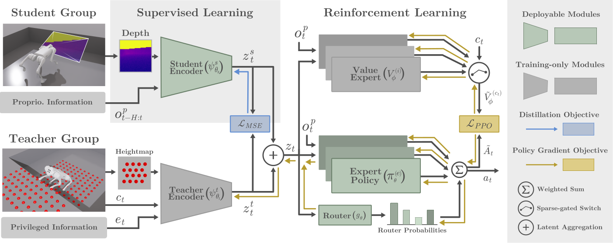
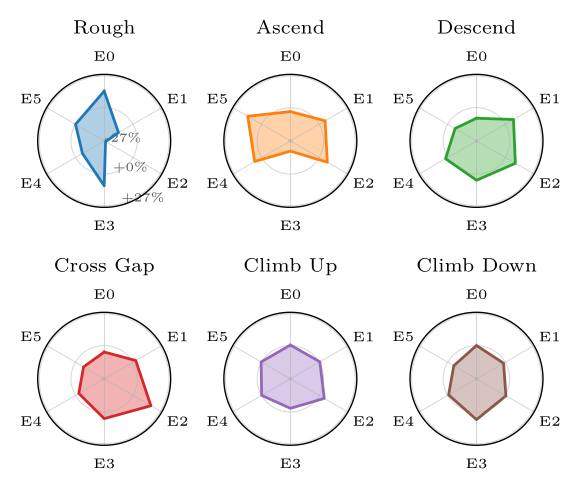
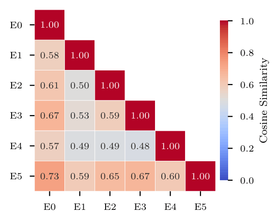
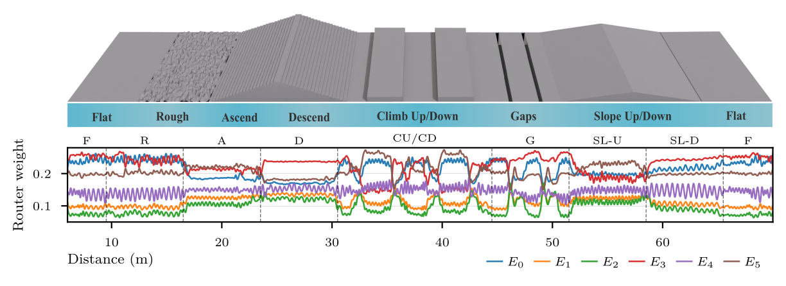

Perceptive legged locomotion over discontinuous terrain (e.g., stairs, gaps, and obstacles) requires adaptive behavior, as a single conservative gait cannot produce the anticipatory maneuvers needed for abrupt topology changes. Cast as multi-task reinforcement learning, this problem introduces a tension between sharing and separation. Tasks use a common locomotion base but have conflicting rewards, so a policy must share behavior while avoiding value interference. Prior work addresses only one side, with monolithic policies sacrificing specialization and hierarchical sub-policies sacrificing generalization across transitions and unseen terrain. We propose CTS-MoE, which combines a dense mixture-of-experts actor with perception-based gating to compose shared behaviors and a multi-critic with task-specific value heads to prevent interference. The model is trained end-to-end in a single-stage concurrent teacher-student setup that handles partial observability and avoids sequential distillation, with task labels used only during training. At deployment, routing depends solely on perception, allowing implicit terrain adaptationwithout a high-level selector or terrain classifier. Experiments on a Unitree Go1 in simulation and on hardware across seen and unseen terrains show task-aware specialization, with lower tracking error and higher success rates than monolithic baselines.

Overview of CTS-MoE. A single-stage framework that jointly trains the privileged teacher and the deployable student, extending CTS† to the perceptive MTRL setting. After each update a supervised distillation aligns the student latent to the teacher's, removing the mismatch of sequential distillation. Both branches feed one policy trained with a multi-reward formulation (a task-specific reward per terrain), realized by a dense mixture-of-experts actor, whose perception-conditioned router soft-weights and composes expert actions, and a sparse multi-critic that isolates per-task value signals to stabilize PPO. Routing on perception rather than task labels makes terrain adaptation implicit, with no high-level selector or terrain classification at deployment.† CTS: Concurrent Teacher-Student Reinforcement Learning for Legged Locomotion (Wang et al., 2024).
- A concurrent teacher-student framework that extends asymmetric distillation to the perceptive MTRL setting, jointly training the representation and expert policies.
- We resolve the sharing–separation tension in multi-reward RL asymmetrically, a dense MoE actor composes shared behaviors, while task-specific value heads prevent reward interference.
- A demonstration that perception-conditioned routing enables implicit policy adaptation, yielding task-aware specialization without explicit task labels.
CTS-MoE outperforms the perceptive baselines, with the largest gains on terrains that demand anticipatory behavior — success rate increases by +29.3% on gaps and +10.3% on climb-up over the prior perceptive baseline. The MoE actor yields no improvement for the blind baseline, confirming that the gains come from the multi-task formulation enabling perception-conditioned specialization, not from representation learning alone.
| Terrain | CTS-MoE Ours |
Ego-Vision Agarwal et al. (2023) |
MoE-Loco Huang et al. (2025) |
CTS Wang et al. (2024) |
|---|---|---|---|---|
| Flat | 100.0 | 100.0 | 100.0 | 99.7 |
| Ascend | 97.0 | 93.3 | 71.3 | 85.0 |
| Descend | 100.0 | 100.0 | 99.7 | 100.0 |
| Gaps | 98.3 | 69.0 | 40.0 | 40.3 |
| Climb-Up | 87.0 | 76.7 | 63.3 | 78.0 |
| Climb-Down | 99.7 | 96.3 | 96.0 | 98.0 |
Baselines are adapted versions of prior methods, each re-implemented within our pipeline with the MTRL structure to provide a fair comparison.
Expert specializationThe MoE actor achieves task-aware specialization, individual experts capture complementary, terrain-specific control strategies and the framework composes them implicitly without relying on explicit task identification. Moreover, since all experts optimize the same global objective of velocity tracking, their behaviors diverge only subtly across terrains, resulting in gradual changes that reflect implicit adaptation rather than sparse switching.

Expert usage patterns across the different terrain tasks.

Pairwise cosine similarity between the experts' output actions.

Temporal evolution of expert usage along a long course mixing seen and unseen terrain. Expert selection varies smoothly with terrain and time — no discrete switching as in hierarchical approaches.
Cite this work
@misc{affonso2026ctsmoe,
title={CTS-MoE: Implicit Terrain Adaptation via Mixture-of-Experts for Perceptive Locomotion},
author={Francisco Affonso and Matheus P. Angarola and Ana Luiza Mineiro and Aditya Potnis and Marcelo Becker and Girish Chowdhary},
year={2026},
eprint={2606.19633},
archivePrefix={arXiv},
primaryClass={cs.RO},
url={https://arxiv.org/abs/2606.19633},
}